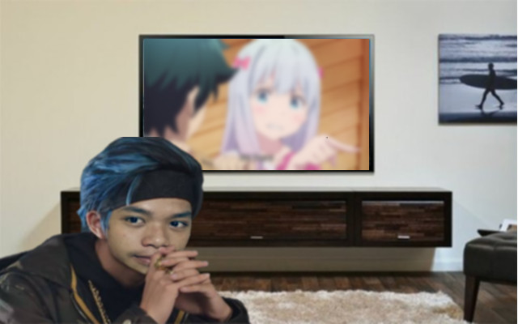
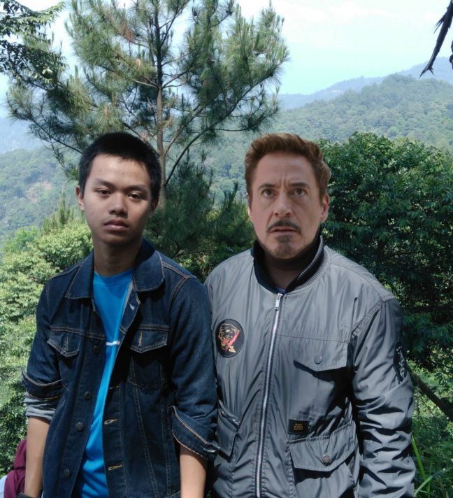

My Short Story
Ini semua adalah tentangku, iya tentangku. Didunia ini, Aku lahir sebagai manusia. Kemudian Aku dibesarkan oleh Orang Tuaku hingga saat ini. Aku hidup seperti orang lain pada umumnya, hanya saja aku berbeda dengan yang lain. Karna apa ? Karna Aku hanya ada 1 didunia ini wkwkwkwk. Saat SD, Aku sekolah di SDIT Rahmatan Lil Alamin sering disingkat RLA karna terlalu panjang saat penyebutannya, sekolah ku ini berlokasi di Cibungbulang Bogor. Setelah lulus, Aku melanjutkan sekolahku yaitu SMP, SMP ku tidaklah jauh dari SD ku karna SD dan SMP ku sama hanya saja beda tingkatan. Btw itu sekolah cuma beda beberapa meter aja bisa dibilang emang satu kawasan, guru-guru nya juga sama semua. Nah, saat SMA aku melanjutkan ke SMK, yaitu SMK-SMAK Bogor ( Sekolah Menengah Atas Kejuruan Bogor, awal kupikir sebelum masuk hari biasa ) biasa dipanggil SMAKBO . Meskipun kimia bukan Main Ability ku, Aku tetap mempelari ilmu kimia ( emang ga punya bakat utama si dari awal, universal jadinya wkwkw ). Mungkin segitu aja pendahuluannya. Kalau ingin lebih dekat denganku, eh maksudnya lebih tau tentangku, baca aja ini semua yang dibawah OKE.
My Chemicals Skills
Microbiology
Analytical
Organic
Physics
Identity
Nih nih Biodataku kalau mau tau mah...
- Full name : Muhammad Anugrah Yudha Prasetya
- Nickname : Yudha
- TTL : Bandung , 20 Juli 2002
- Rumah : Ciampea
- Agama : Islam
- Hobi : Apa weh
- Makanan fav. : Tongkol & Bacem Tempe
- Warna fav. : Hitam
- In Game Name : YudhaGaKiru
Hobby
Actually, I like watching some Animes ....Di kehidupanku, Aku lebih sering berada di rumahku lebih tepatnya berada didalam kamarku. Disana Aku bisa melakukan banyak hal, misalkan belajar, bermain, membaca novel/komik atau nonton. Nah, untuk nonton Aku paling sering nonton anime (emang jarang yang laen si). Berarti ya hobiku itu nonton anime mungkin. Masih banyak si sebenernya mah kayak tidur, lari, mabar ama temen, dan baca komik. Tapi ya kalau paling sering dilakukan ya ini.

Art
The Best Mahakarya that I create in... 2019. Actually I create this for my computer task in SMAKBO. Tugas ini kubuat dengan sepenuh hati loh ( btw ternyata Gw ganteng jg y, ea ).

Idol
Robert Downey, Jr. ( Tony Stark as Iron Man ).... Aku mengidolan nye karna Aku suka sekali dengan perannya saar bermain film di seri AVENGERS yaitu Iron-Man. Berbeda dengan Hero yang lain, IronMan sangatlah cerdas akan teknologi yang Ia miliki dan juga tentunya sangat kuat. Bahkan Ia hampir seimbang saat melawan Thanos, Alien terkuat ( ada di AVENGERS IFNINTY WAR ). Sebagai anak SMAKBO Aku juga ingin seperti Tony Stark yang pintar dan hebat berantem itu eh maksudnya kuat. Tapi sekarang Aku sudah akrab banget ama Tony Stark, liat weh eta poto kumaha.

My Unique Achievement
Follow MAI Events
LAPSUS Done
Lost Pen
Sleep During The Lesson
My Simple Daily Routine
- Ordinary Day
- Wake Up
- Prepare for School
- Breakfast
- Go to School
- Study Until Go Home
- Take A Bath and Dinner
- Do The Homework
- Sleep
- Holiday
- Wake Up
- Sleep
- Breakfast
- Play Game/Watch Something/Sleep
- Lunch
- Play Game/Watch Something/Sleep
- Dinner
- Play Game/Watch Something/Never Sleep
- NOTE!
- My PRAYER routine is still done on time on ordinary day and holiday. Because that's my most important obligation
My Reputation
Izumi Sagiri. Main Waifu.
Anugrah Yudha teach me to drawing some Manga.
Thanos. Lord of Galaxy.
Anugrah Yudha help me find the Infinity Stones.
Alfrian Syach. Ordinary member at WErANALYSTS.
No one is better than Anugrah Yudha in WErANALYSTS.